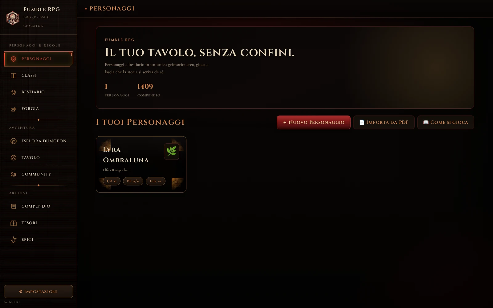
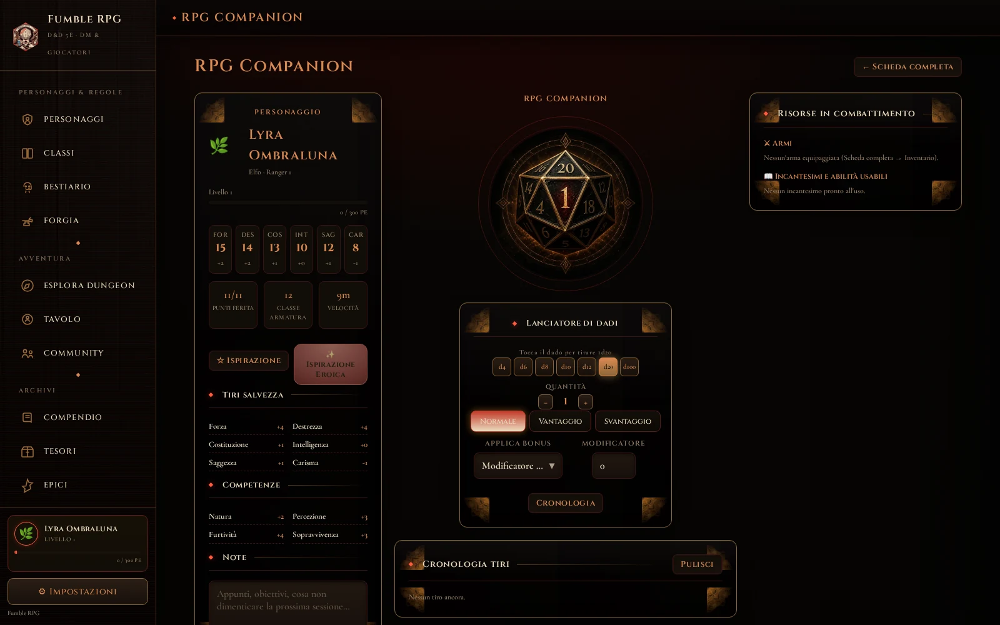

Tutto quello che ti serve per la tua campagna
Fumble RPG è il compagno digitale per D&D 5ª edizione 2024 e per Pathfinder 2ª edizione (Remaster): schede personaggio, dadi, bestiario, classi e compendio delle regole. Scaricabile per Windows, macOS e Android, e utilizzabile anche da iPhone, iPad e da qualunque browser senza installare nulla.

Le funzionalità
Quattro strumenti veri, sempre sincronizzati e sempre aggiornati: bestiario, classi, livelli epici e compendio delle regole.
Bestiario
960 mostri, filtrabili per tipo, taglia, grado di sfida e origine: ufficiali e homebrew, sempre pronti per il tavolo.
Classi e sottoclassi
Tutte le classi ufficiali e oltre venti classi homebrew, con guida rapida, sottoclassi e progressione livello per livello.
Livelli epici 21-30
Porta la campagna oltre il livello 20: privilegi epici per ogni classe, ufficiale e homebrew, in ordine alfabetico.
Compendio completo
405 incantesimi, talenti, privilegi, oggetti, background e condizioni: tutte le regole a portata di mano, senza sfogliare i manuali.
Pathfinder 2e
Scheda, bestiario (173 creature), oggetti magici e compendio anche per Pathfinder 2ª edizione (Remaster), con la stessa parità di funzionalità di D&D.
Un lanciatore di dadi che conosce già il tuo personaggio
Caratteristiche, punti ferita, classe armatura e tiri salvezza restano sott'occhio mentre tiri: nessun passaggio dalla scheda al dado e ritorno.
Cronologia dei tiri sempre visibile, per non perdere il conto di un critico arrivato tre turni fa.

Community
Unisciti alla community di Fumble RPG su Discord: parla con altri giocatori, condividi le tue campagne, segnala idee e problemi, resta aggiornato sulle novità.
Entra nel server DiscordDownload
Fumble RPG è disponibile come programma vero e proprio per Windows, macOS e Android: si scarica, si installa una volta sola, e da lì in poi si aggiorna da solo ogni volta che lo apri con una connessione a internet, senza dover tornare su questa pagina. Su iPhone, iPad e da qualunque altro browser puoi invece usarlo direttamente online, senza installare nulla.
Non trovi Fumble RPG su Play Store o App Store: l'APK e gli installer Windows/Mac non sono firmati da uno sviluppatore registrato Apple o Google, quindi il sistema operativo mostra un avviso prima di aprirli. Su Windows: clicca «Ulteriori informazioni» poi «Esegui comunque» nell'avviso di SmartScreen. Su Mac: se compare «app da sviluppatore non identificato», fai clic destro sull'app → «Apri» → conferma. Su Android: il sistema chiede di confermare l'installazione da un'origine diversa da Play Store, la prima volta; è normale per un'app amatoriale distribuita fuori dagli store.
Se nelle scorse settimane avevi iniziato a usare la versione solo browser (senza installazione): apri quella versione da questo link, vai su Impostazioni → «Esporta i tuoi dati», poi apri l'app installata e importa lo stesso file da Impostazioni → «Importa dati». Le due versioni non condividono automaticamente i personaggi salvati.
Disclaimer
Fumble RPG è un progetto amatoriale creato da un fan, senza alcun collegamento con Wizards of the Coast LLC. Non è un prodotto ufficiale e non è sponsorizzato, approvato o affiliato in alcun modo con Wizards of the Coast. Dungeons & Dragons, D&D e tutti i marchi correlati sono proprietà di Wizards of the Coast LLC.
La base dati dell'app è mista: una parte è tratta dallo System Reference Document 5.2.1, rilasciato da Wizards of the Coast in licenza Creative Commons Attribution 4.0; un'altra parte è materiale D&D 5e ufficiale non coperto da quella licenza; un'altra ancora è contenuto homebrew originale dell'autore. Ogni specie, sottoclasse, incantesimo, oggetto magico e mostro presente nell'app è etichettato con la sua fonte reale, così da distinguere sempre cosa viene dallo SRD open source, cosa è materiale D&D ufficiale e cosa è invece originale. L'app è pensata esclusivamente per un uso amatoriale e gratuito all'interno della community dei giocatori. L'uso dell'app è a esclusiva discrezione e responsabilità dell'utente finale.
Come installare Fumble RPG
Pochi passaggi, diversi solo nell'avviso di sicurezza iniziale, normale per un'app amatoriale distribuita fuori dagli store ufficiali.
1. Scarica l'installer
Clicca su "Scarica per Windows" qui sopra: si scarica il file RollOne Setup 1.7.0.exe.
2. Avvialo
Apri il file scaricato. Se compare l'avviso di Windows SmartScreen, clicca «Ulteriori informazioni» e poi «Esegui comunque»: è normale, capita perché l'app non è firmata da uno sviluppatore registrato Microsoft.
3. Pronta all'uso
Fumble RPG compare ora nel menu Start e nella barra delle applicazioni, con una finestra propria. Al primo avvio con internet attivo scarica da solo i contenuti più recenti, e continuerà ad aggiornarsi da solo a ogni apertura successiva.
1. Scarica lo zip
Clicca su "Apple Silicon (M1/M2/M3)" o "Mac Intel" qui sopra, a seconda del tuo Mac (Apple → Informazioni su questo Mac te lo dice, alla voce Chip o Processore).
2. Estrai e avvia
Apri lo zip scaricato (si estrae da solo) e trascina l'app in Applicazioni. Al primo avvio, se compare «app da sviluppatore non identificato», fai clic destro sull'icona dell'app → «Apri» → conferma nella finestra che appare: va fatto solo la prima volta.
3. Pronta all'uso
Fumble RPG compare ora nel Dock e in Applicazioni, con una finestra propria. Al primo avvio con internet attivo scarica da solo i contenuti più recenti, e continuerà ad aggiornarsi da solo a ogni apertura successiva.
1. Scarica l'APK
Clicca su "Scarica l'APK" qui sopra, dal browser del telefono.
2. Installa
Apri il file scaricato dalle notifiche o dalla cartella Download. Alla prima installazione fuori dal Play Store, Android chiede di confermare che ti fidi dell'origine: conferma e prosegui con l'installazione.
3. Pronta all'uso
Fumble RPG compare ora come un'app a sé nella schermata principale. Al primo avvio con internet attivo scarica da solo i contenuti più recenti, e continuerà ad aggiornarsi da solo a ogni apertura successiva.
I tuoi dati sono al sicuro con Fumble RPG
In Fumble RPG, la tua privacy e la sicurezza dei tuoi dati sono la nostra massima priorità. I dati dei tuoi personaggi e delle tue campagne sono salvati su un server dedicato e protetto, pensato per garantirti la massima tranquillità.
La nostra app non contiene pubblicità invasive né acquisti in-app nascosti. Non vendiamo né condividiamo i tuoi dati con terze parti, e puoi richiederne la cancellazione in qualsiasi momento, semplicemente scrivendo all'autore.
Per maggiori dettagli, consulta la nostra informativa sulla privacy completa.